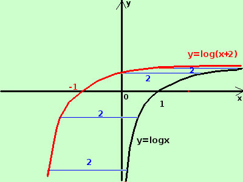

|
sviluppo y = log(x + 2)  e' la funzione logaritmo a base naturale (di base il numero di Nepero e) il cui argomento e' aumentato di 2 aumentare di 2 l'argomento equivale a spostare la curva di due unita' nel verso delle x decrescenti Importante: sommare una costante positiva all'argomento di una funzione equivale a spostarne il grafico verso sinistra di una quantita' pari alla costante abbiamo visto su un esempio con la funzione logaritmo cosa succede ad aumentare/diminuire o la funzione oppure l'argomento della funzione Naturalmente quanto esposto per il logaritmo puo' essere esteso a qualunque altro tipo di funzione |